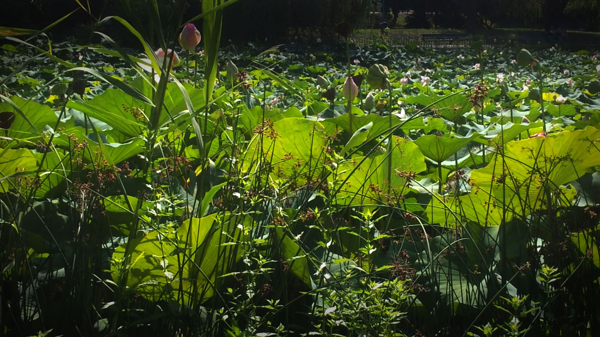

Cancer, Frog & Pike
Three creature portraits in comic relief

Scores & Recordings
Recording
Summary
Cancer, Frog & Pike is a piano suite inspired by Alecu Donici’s fable, though it departs freely from the narrative in order to sketch each creature through its most vivid trait: the crab’s backward pull, the frog’s springing mobility, and the pike’s predatory force. Framed by the recurring presence of the pond, the piece becomes a cheerful, sharply characterized miniature cycle.
Imprint
| Orchestration | Piano |
|---|---|
| Lyrics | — |
| Duration | 9:35′ |
| State | Finished |
| Completed | 2013 |
| Premiered | — |
| Performed by | — |
| Honors | Second Prize at the Sabin Păuța International Piano Performance and Composition Festival composition competition, organized by the Metarsis Society in 2014 |
| Copyright | Claudius Iacob |
Program notes
Although I no longer remember how the idea first came to me to write music in response to Alecu Donici’s verses, I do remember that it happened in the autumn of 2012, from which the first notes also date, namely the opening of The Frog. The piece was only completed a year later.
Alecu Donici made use of these three creatures, who share little beyond their habitat, in order to satirize a society incapable of overcoming personal pride in the service of the common good. In the fable of the same name, the innocent animals take upon themselves the improbable and absurd task of moving a sack of grain into their pond of residence, a thing I do not ask them to do. Instead, I concentrate on each one individually, trying to capture with humor and sympathy its most characteristic trait.
The Crab is little more than a pair of claws, which can be heard striking menacingly in the high register. Otherwise it is a paradoxical and comical creature in its futility: many steps forward, after long planning and cautious probing, are cancelled by two vigorous movements of the tail that send the gentleman crab right back where he started. An uncertain and sinuous melodic path struggles to conquer an ambitus of little more than an octave over the course of nearly an entire phrase, only to collapse back into the low register in the next two beats, precisely where it began.
The Little Frog jumps, and it does so with grace and liveliness, when it is not lazily swimming, drifting afloat, or remaining motionless in competition with the leaves and other lifeless things in the pond. A clearly outlined melodic-harmonic path of leaps alternates with diffuse polyphonies evolving slowly in the middle and lower registers. A play of chase and relâche from one leaf to another.
The Pike is predator number one, lying still under the cover of a submerged branch and attacking ferociously at the opportune moment. Often the prey does not fight back, or does so only briefly and without any real chance of success. A threatening ostinato in the low register grows into an all-consuming homophonic drive and moves implacably toward a strident, painful cluster in the high register.
Though absent from Donici’s poem, my music introduces a fourth character: the pond. The pond in which all three live is also partially personified and appears episodically through an introduction, two intermezzi, and a conclusion. The cyclic bass formula that characterizes this figure invites the contemplation of imaginary ripples moving gently outward and turning back once they reach the banks. The theme in the upper register suggests a possible little fish on an afternoon stroll among the burdocks, with whom the distinguished Mrs. Pike knows perfectly well what to do.